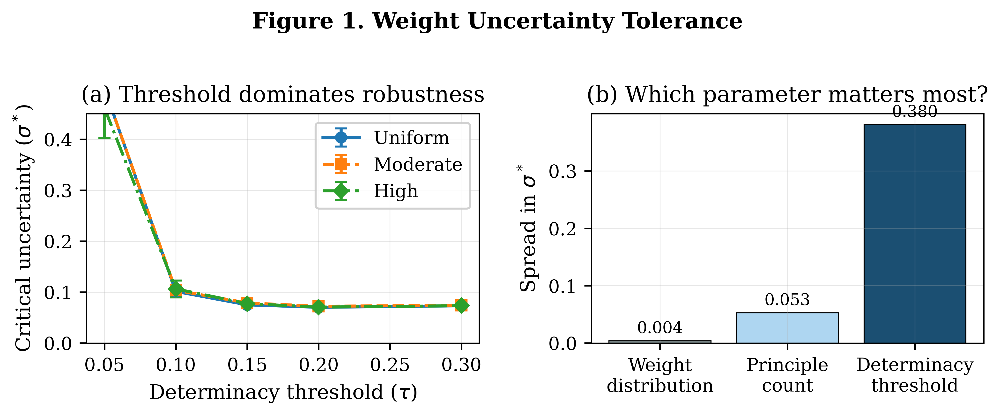
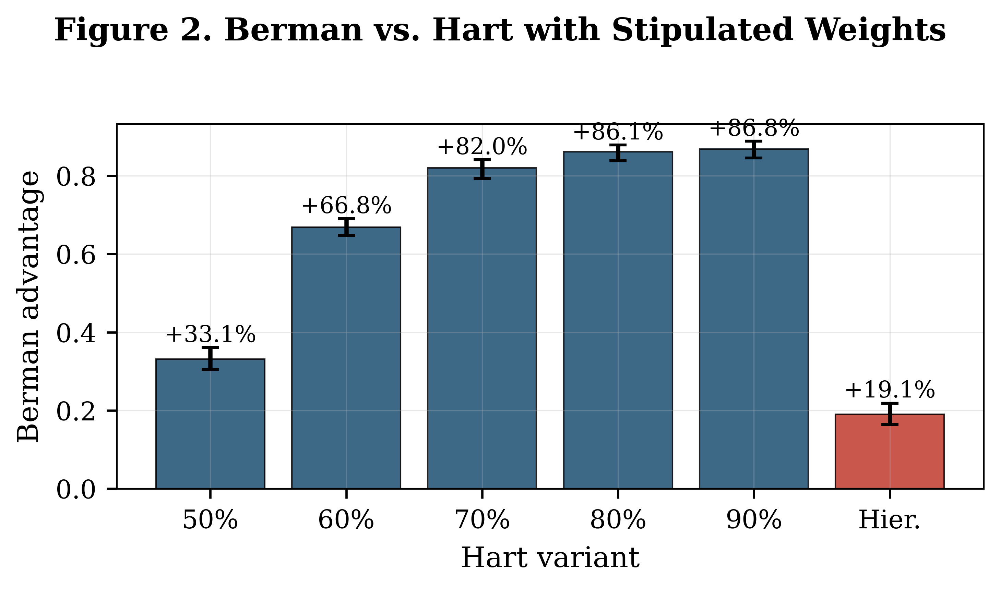
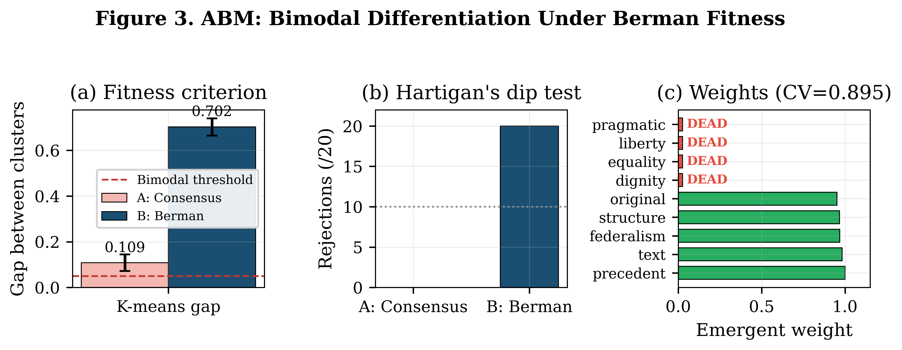
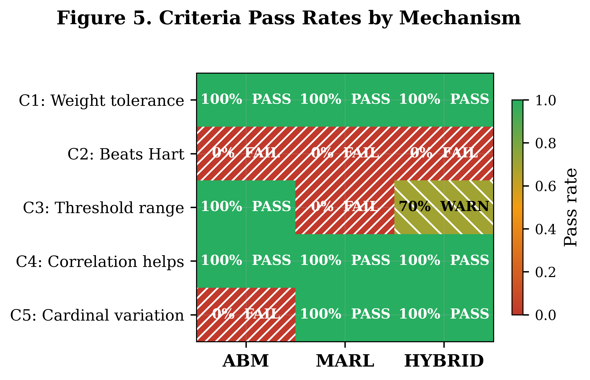
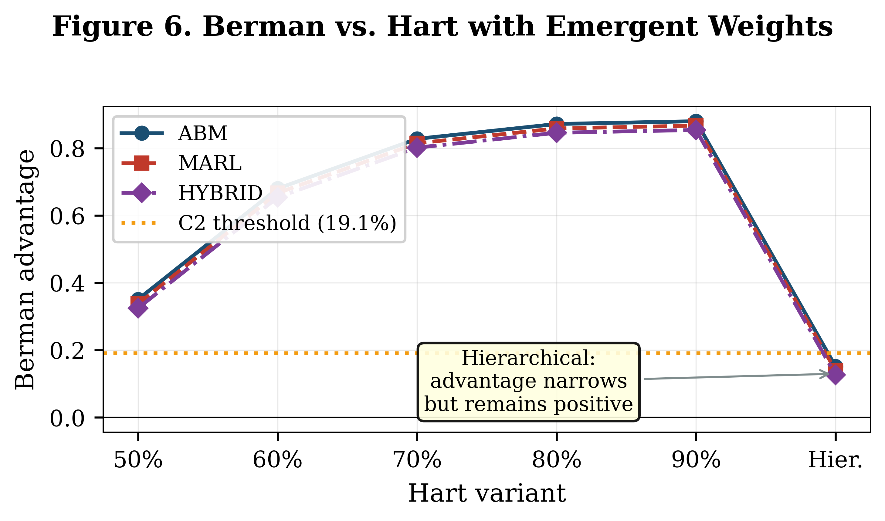
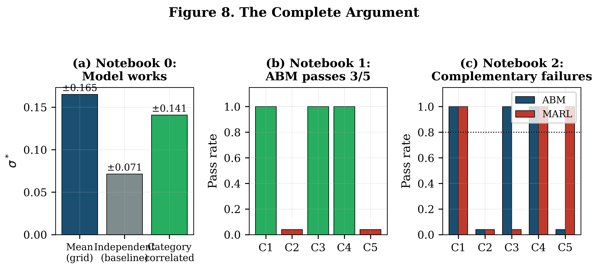

Mitchell Berman's principled positivism proposes that legal principles aggregate through Simple Additive Weighting, with each principle contributing force proportional to its weight and activation. This Article subjects the theory to the first systematic computational analysis. The SAW model tolerates substantial weight uncertainty, handles conflicting principles, and delivers significantly more determinacy than Hart's consensus-based alternative. An agent-based model shows that principle weights can emerge from simulated legal practice, but the emergent weights are binary (fully entrenched or dead), lacking the graded variation the model requires. Different practice mechanisms, moreover, produce incompatible weight structures: evolutionary selection achieves differentiation without gradation, while strategic optimization achieves gradation without differentiation. This mechanism dependence is the Article's central contribution: Berman's claim that parameters are "practice-grounded" requires specifying which kind of practice generates them.
All notebooks run in Google Colab. Click to open directly in your browser.
Tests Berman's SAW model with stipulated parameters across 9 experiments.
Simulates 100 judges across 4 methodologies. Tests whether weights emerge from practice.
Compares ABM, MARL, and Hybrid mechanisms. The central finding.
Generates all 11 figures (8 main + 3 supplementary) from exported data.
| Finding | Value | Source |
|---|---|---|
| Mean weight tolerance (σ*) | ±0.165 | Notebook 0 |
| Berman vs. hierarchical Hart | +19.1% | Notebook 0 |
| Berman vs. consensus Hart (50%) | +33.1% | Notebook 0 |
| Balanced-conflict determinacy | 76.8% | Notebook 0 |
| Cardinal vs. ordinal advantage | 3.3× | Notebook 0 |
| Dip test (Berman fitness) | 20/20 reject | Notebook 1 |
| SAW fidelity | r = 0.9994 | Notebook 1 |
| ABM weight CV | 0.895 | Notebook 2 |
| MARL weight CV | 0.344 | Notebook 2 |
| C2 pass rate (all mechanisms) | 0% | Notebook 2 |






All 11 figures available as PDF and PNG in the figures/ directory.
All experimental results are exported as CSV files, organized by notebook. The Publication Figures notebook reads these CSVs to generate every figure in the paper.
@article{kamper2026computational,
author = {Kamper, David G.},
title = {Computational Jurisprudence: Testing Berman's
Principled Positivism Through Agent-Based Modeling},
year = {2026},
note = {Manuscript}
}